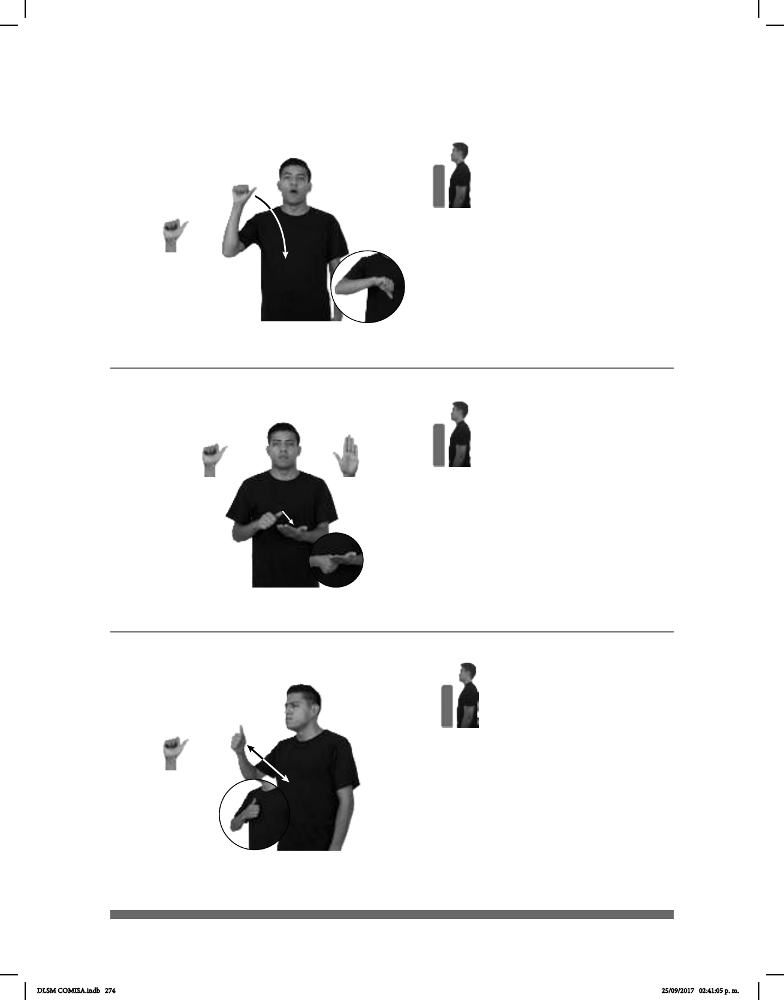

274
(A-125)
Seña: SM
A.1
La palma inicia
hacia afuera y termina oblicua hacia
la izquierda y hacia abajo.
Del hombro al pecho.
La mano se mueve
formando un arco.
Labios
redondeados.
adv. En el día en que
estamos; este día.
Seña: SB
MD A.1, MB B-P.2
MD palma hacia abajo. MB
palma hacia arriba.
A la altura del pecho. MD sobre
MB.
El dedo pulgar de la MD
presiona la palma de la MB.
1. sust. f. Marca que dejan las
líneas de las yemas de los dedos en alguna
cosa al tocarla o presionarla; se utiliza para
o rastro que deja en la tierra un cuerpo que
pisa o se apoya.
(A-124)
Hoy
HOY CUMPLEAÑOS pos-MÍ
Hoy es mi cumpleaños.
CREDENCIAL VOTAR HABER pos-MI HUELLA
La credencial del INE tiene mi huella.
Seña: SM
A.1
Palma hacia dentro.
Sobre el pecho.
Recto hacia el frente
repetidamente.
loc. v. Fijar como meta
el punto de partida y efectuar tal
ruta rápidamente.
(A-126)
ANTES CANCÚN IDA-Y-VENIR
DLSM COMISA.indb 274 25/09/2017 02:41:05 p. m.